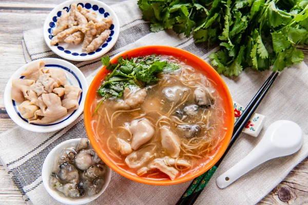

Slender Noodles with Oysters

🍜 Bahan-bahan
150 g misua (slender wheat noodles)
150 g tiram segar (oyster), cuci bersih
2 siung bawang putih, cincang
1 sdm jahe cincang
750 ml kaldu ayam / air
1 sdm kecap asin
1 sdt saus ikan (opsional)
Garam & lada secukupnya
1 sdt tepung tapioka + 2 sdm air (larutan pengental)
🌿 Pelengkap
Daun ketumbar (coriander)
Cuka hitam Taiwan (opsional)
Bawang putih tumbuk dengan cuka (untuk saus khas)
INSTRUKSI
👩🍳 Cara Membuat
Tumis bawang putih & jahe sampai harum.
Tambahkan kaldu, didihkan.
Masukkan misua, masak hingga lembut (2–3 menit).
Masukkan tiram, masak sebentar hingga matang (jangan terlalu lama).
Tambahkan kecap asin, saus ikan, garam, lada.
Tuang larutan tapioka untuk mengentalkan kuah sedikit.
Sajikan hangat, taburi ketumbar dan tambahkan saus bawang putih + cuka jika suka.
Berikut adalah video tutorial cara membuatnya